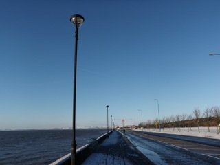
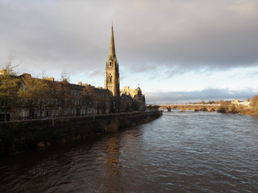
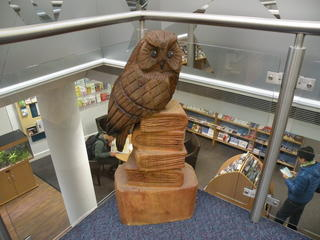
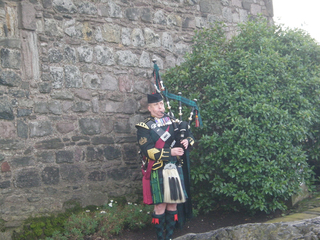

-
Diary at Discovery point in Dundee
2012.10.20-2013.03.26
2013.03.26 #Tillage
- 研究所の農作業がちょこちょこっと始まってきました．いろいろ工事もあったりでうるさかったりします．
2013.03.25 #Sunset
- 雪もまだまだ降りますが暖かい日がほんの少しは増えたような・・・でも，まだまだやっぱり寒いです．アキレスが亀に追いつけないように私は春に追いつけない．
2013.03.24 #The tay estuary 2
- 河口の町には砂浜があります．暖かい日は犬や子どもを連れた人がたくさん散歩していました．
2013.03.23 #The tay estuary
- Dundeeからちょっと離れた町は港っぽい名前の町が多い気がします．～Ferryだったり，～Portだったり．
2013.03.22 #Keep Calm and Carry On
- Scotlandを含む英国ではほんとに良くこの「Keep Calm and Carry On」の標語やそのパロディを見かけます．パロディによっては「なんで？」って感じのもありますが，大事なことだよな，と思います．
2013.03.21 #Angel
- バグパイプを吹く天使（スコットランド名物？）
2013.03.20 #Snow again
- 三月も後半ですがまだまだ雪が続きます．春は遠い．
2013.03.19 #Bagpipe
- 研究所にも演奏できる方がいました．すごい．
2013.03.18 #Harbor 2
- Dundeeは川沿いですが少し町から離れたり，風向きによっては潮の匂いがする気がします．
2013.03.17 #Harbor
- 真冬でもTシャツの人がいるのですが，日が出るとTシャツがさらに増えて，みんな散歩しています．
2013.03.16 #Chair
- 教会の椅子にはブルークロスがありました．教会では土曜日にしばしば音楽会をやっている印象があります．
2013.03.15 #Stained glass
- 少し大きな教会には大抵ステンドグラスがあります．だいたいは何かのお話を表したもの．ごくまれにシンプルなものもあります．
2013.03.14 #James Hutton
- James HuttonはScotlandの研究者で，この名に因んで研究所の名前はつけられています．地質学者であり農業研究者でもあったのでふさわしい名前ということなんだと思います．
2013.03.13 #Snow field
- 再び雪が積もりました．近年は異常気象でこの時期に雪が降ったり寒くなったりしているそうです．寒い
2013.03.12 #Home zone
- 変な看板．
2013.03.11 #Statue
- 行ったことのなかった図書館の裏に猫とおじさんの変な銅像がありました．実家の近くにあるのもそうですが，ベンチに座れる人数を減らすと思うのだけど．
2013.03.10 #Lawn
- たまに晴れると芝生がきれいです．Scotlandはほんとに曇りばかりです．Scotlandの人も「そんなもんだ」というのでそんなものだと思っていましたがラジオによるとこれはこれで異常気象のようです．晴れはしないけど雨はもう少し少ないみたいです．
2013.03.09 #Fence
- Scotlandは石垣が多い，というかほとんど石垣ですがたまに生け垣も見かけます．ある日かなり強く剪定されていました．
2013.03.08 #Bloom
- スコットランド(英国)は3月末から夏時間です．そろそろ春の気配．少しずつですが花が咲きはじめています．でもまだまだ寒い日が多いです．
2013.03.07 #Never ending
- 最近議論していて，そろそろ仕事をまとめようとしているというのが見透かされたような瞬間がありました．実際に何かを達成すると，次の課題が見えてきます．その課題をクリアすると，またその次の課題が往々にしてあらわれます．「終わらないなあ」と思いますが，次の課題が見えなくなったら，やることがなくなってしまう気がするので，まあいいか，と思います．でもどこでまとめると良いのか難しいところです．
2013.03.06 #Cottage
- Scotlandでは日本の建て売り住宅のような家はほとんど見ません．新しい家もわざと古い家のように作ってあったりもします．古いものを直しながら使うことが美徳であるようです．ただケチなのかもしれません．そのように言われることも多々あるみたいです．
2013.03.05 #Close

- 人が通れるくらいの小さい道が街中にたまにあります．そういう道はたいていCloseと呼ばれています．EdinburghではCloseが観光資源になっています．
2013.03.04 #Moss
- 石垣だとさまざまなコケがよく生えています．生え方も一様でなくて面白い．
2013.03.03 #Arrow
- 上？
2013.03.02 #Thistle
- スコットランドには国の花あざみがあります．あざみが国の花になった伝説があるのですがなかなか面白いです．道路標識にもくっついていました．でもスコットランドの人以外にはあざみをあらわしているとは思えないのではないでしょうか？来年グラスゴーである英連邦のオリンピックのようなもののキャラクターもあざみです．
2013.03.01 #Stone wall
- イギリスではきれいに積まれた石垣がたくさんあります．地域によって，また家によって色が違います．
2013.02.28 #World's end
- ２月終了．
2013.02.27 #Softly, as in a Morning Sunrise

- 2月も終わりに近づいて，日はかなり長くなりました．一時は日の出より早く家を出て日の入りより遅く帰るという日本では中々あり得ない状況でしたが最近は日本と同じような印象になりつつあります．雨や雪の日や風の強い日も減った気がします．
2013.02.26 #T
- 町の何カ所かにある看板．Ｔ字路を示すマークだと思います．でもＴ字路が赤で示すほど重要だとは思えないのですが．こちらの信号のない回転式(？)の交差点の形状と関係があるのかもしれません．
2013.02.25 #Mask
- 能面のようなものが壁に埋め込まれていました．なんか口のあたりから水が出るみたいですが・・・．あごから下にサビが一筋ついているのが不気味ですが見ているとおかしいです．
2013.02.24 #Garden
- 長い坂に長い柵があります．柵の向こうには市民農園があって興味があるのですが入れません．野菜泥棒阻止？ガラス温室のようなものが立っている区画がけっこうあります．借主が立てているのかな？
2013.02.23 #Football studiums
- 丘から町にある二つのフットボールチームのサッカー場が同時に見えました．至近距離にありすぎな気もします．奥はオレンジと黒，手前は青と白がチームカラーみたいです．
2013.02.22 #Door
- 街中で奇妙なドアを見かけました．A,B,C,Dと横の４の倍数．おそらくフラットか何かの何か(と書くと何も推察になっていないですが)だと思うのですが・・・．
2013.02.21 #Stream
- いつもと違うバス停で降りたら研究所の近くに小川がありました．全然気がつかなかった．
2013.02.20 #Frost
- 最近暖かくなりつつありますが，まだまだ朝は霜の降りる日もあります．芝生が白い
2013.02.19 #Goat
- 山羊もいました．
2013.02.18 #Lion 2

- 正面から撮影すると表情が変わります．笑っているみたい．
2013.02.17 #Lion
- 近くの町の教会に動物の首の銅像がありました．数回行っていたのに最近始めて気づきました．この教会は大きく由緒正しいみたいです．１回３つに分けてまたくっつけたようで少し構造が奇妙です．
2013.02.16 #Scottish Weather
- 最近も相変わらず天気は晴れたり曇ったりです．予報を見ると「晴ときどき曇りときどき雨ときどき雪」のような何でもありのマークの日もあります．ほんとにそんな天気の日もあるのが驚きです．FOGとMISTはそれとは別に表示されるのですが，どっちがどうかよくわかりません．
2013.02.15 #A Good Day of Seabird
- 警戒心が緩い海鳥だとほんとうに近くまで近づけます．海鳥がいるせいかカラスはあまりいません．鳩はたくさんいます．
2013.02.14 #Riverside

- Dundeeでは都市再生計画の一環として最近サイクリング用に研究所あたりから少し海よりの町までの道も整備しているようです．天気がよければ気持ちがいいです．
2013.02.13 #Miscanthus
- 日本のススキのような草もあります．季節感が若干狂いますが．
2013.02.12 #Evergreen
- 夏と冬の気温差が小さいせいか葉を落とさない木が日本より多い気がします．もちろん葉を落とす木々もちらほら．
2013.02.11 #Heating
- スコットランドの屋内施設にはよくオイルヒーターのような暖房機があります．滞在している部屋にもありますし，カフェにもある場合が多いです．近くに座ると暖かいです．この駅の待合室のものは人の背丈より大きいです．しかし待合室は広いので近く以外はそんなに暖かくありません．
2013.02.10 #Barrel
- 最近駅に樽で作った汽車の遊具がお目見えしました．樽はおそらくウィスキーを入れていたものの再利用です．ウィスキーの樽自体，シェリー酒やワインの樽の再利用ですから再利用の再利用ということになります．ウィスクーを保存しておく良質な樽も少なくなりつつあるという話ですから，樽をめぐって競合することになるかもしれません．
2013.02.09 #Airplane track
- Dundeeには空港がありますが，小さい空港で小さい飛行機しか止まりません．研究所の近くにあるので，仕事をしていると時々大きな音がします．
2013.02.08 #CocaCola
- WWFのチャリティ関係パッケージです．コカコーラは日本では見かけないチェリー味があって美味しいです．これはチェリー味ではないです．
2013.02.07 #Give way
- 実際は「道をお譲りください」というような意味ですが，別の良い意味にも悪い意味にも取れるような標識です．
2013.02.06 #Queen's Hotel
- 街の老舗のようなホテルです．別に大きなホテルもいくつかありますが．手前に見える銀行の看板は写真に写っていない隣の建物のものでこちらも年季が入っています．この銀行はスコットランドの紙幣を刷っている銀行のひとつです．
2013.02.05 #Aberdeen Steak
- ロンドンでAberdeen Steakの店を見かけました．スコットランドでは牛肉の売り文句にAberdeenやAngusが使われていますが，ロンドンでも通用するのか，と思いました．そういえば少し前にスーパーの100％牛肉のはずのバーガーに馬肉が混じっていたことがちょっとニュースになっていました．
2013.02.04 #Seabird 3
- みな同じ川上の方を向いています．人の目には捉えられない，海鳥にとっては何か重要なことが川上の方にあるのかもしれません．真横を向いている方が鳥っぽく撮れるので良いです．
2013.02.03 #Seabird 2
- ２羽並んでいます．１羽が飛んで２羽に間に入ると間隔が狭まるのが嫌なのか，どちらか１羽が飛んで・・・という具合に等間隔が出来上がって行きます．
2013.02.02 #Seabird
- 京都の鴨川の岸辺のように海鳥が等間隔で並んでいます．
2013.02.01 #Snowladder
- 正確にはStairsですが．この階段の上は学生街です．学生街から階段を下りて線路を渡れば24時間営業の大きなスーパーがあって便利・・・なはずなんですが，陸橋も踏切もなくて，どうやっても線路を渡れません．遠回りするしかないです．不思議
2013.01.31 #Snowfield 3
- 雪がやんで消えてどんどん日が長くなっています．日本だと２月はまだまだ冬ですがスコットランドは春の予感？でも暖かくなったり寒くなったりを周期的に繰り返すので春に向かうというよりも冬をぐるぐる回っている気がします．
2013.01.30 #Snowfield 2
- 暖かくなったり雨が降ったりして，この雪もすっかりなくなりました．風景は一変．
2013.01.29 #Snowfield
- 雪はけっこう降りました．やむと犬の散歩をしたり雪だるまを作ったり．雪の日は続かないで欲しいですが雪の日が続くほどに晴れた日はほんとうに気持ちがよいです．
2013.01.28 #Paddington
- ロンドンの地下鉄Paddington駅は工事中だったのですが．工事の看板に人以外の有名な児童文学作品の主人公がいました．駅構内の銅像は小さくて扱いが軽いです．
2013.01.27 #BURNS' NIGHT 2
- 違うスーパーのハギスコーナーです．
2013.01.26 #Heavy snow 2
- 再び雪です．
2013.01.25 #BURNS' NIGHT
- 最近スコットランド名物のハギスコーナーが拡張されていたのですが，これはバーンズナイトのためです．バーンズというスコットランドの国民的な詩人が作ったハギスの詩を詠んで，みんなでハギスを食べる日です．そんなにみんながやるというものでもないようですが．バーンズはAuld Lang Syneを発掘(あるいは作詞)した詩人です．
2013.01.24 #Heavy snow
- 最近ずっと吹雪に近い天候でしたが今日は少し晴れました．ほっと一息．
2013.01.23 #Graffiti
- いつも通るトンネルの上に落書きを見つけました．全然気づきませんでした．
2013.01.22 #Library
- 週末に時々お世話になっているAbertay大学の図書館です．Dundeeには数年後にロンドンにあるV&A博物館の別館(？)ができるそうで，その予定の展示なんかもやっていたみたいです．建物の設計者は有名日本人建築家です．ところで，街の美術館は建物が傾いていて補修の必要があるからしばらく(数年)休止するという噂です．
2013.01.21 #Blue Cross
- 風の強い日は街の真ん中の教会の上の旗が良くはためいています．ユニオンジャックではないです．
2013.01.20 #Contemporary Art
- Dundeeには現代美術を冠した施設があります．美術系の市民講座や映画館，カフェで構成されてそちらのほうが活発に見えますが，イベントでたまに現代アート的なことをやっているようです．
2013.01.12 #Station
- パブでDundeeの駅の昔の写真を見たことがありますが，駅はかつてもほぼこのままでした．駅ビルも含めた再開発が進んでいますが，基本的な構造はずっとこのままな気がします．
2013.01.11 #Blue Cross Sale
- クリスマスとお正月のセールが終わったと同時にBlue Cross Saleが始まりました．Blue Crossはスコットランドの国旗(？)です．スコットランドは英国の一地域ですがユニオンジャックはほとんど見かけません．
2013.01.10 #Chinese store
- Dundeeには少ししか日本人がいないため日本の食材はほとんど売っていません．中国食品店の一角に少しだけ売っています．中国食品店は滞在場所から遠かったのですが最近近くになりました．工事中です．
2013.01.09 #Piri piri
- ピリピリやピリピリソースという名称をレストランのメニューでたまに見かけます．アフリカの唐辛子の名称からきていて日本と同じような意味で使っています，でも日本でピリピリから想像するよりも辛くありません．
2013.01.08 #To let
- イギリスでは賃貸の募集をFor rentではなくTo letと言います．Dundeeはやや斜陽な街なのか町中で良く見かけます．売り出し中はFor saleです．
2013.01.07 #Abertay Dundee University
- DundeeにはDundee大学とは別にAbertay大学があります．この大学は情報工学系が強く，イギリス国内では特にゲームで有名な大学で企業と学生が組んでゲームを作ったりもしています．ゲーム関連企業もいくつかあります．
2013.01.06 #Royal Mail

- 住宅街で時々壁に埋め込まれたポストを見かけます．ポストは日本同様赤いです．壁自体が誰かの家の敷地だと思うのですが，どうなっているのでしょうか？
2013.01.05 #Robin
- クリスマスから年末にかけてクリスマスギフト売り場等々でよく鳥の置物やぬいぐるみをみかけました．調べてみるとコマドリのようです．この銅像もコマドリだと思うのですが，その場に特に説明がなかったので自信ありません．魚はサケかな？
2013.01.04 #Heath
- 年末から年始にかけて風の強い日が多かったです．風が強い日は「寒々とした光景」という言葉が良く当てはまるような光景がスコットランドにはたくさんみられます．
2013.01.03 #Reopening
- クリスマス休みは研究所も完全に閉まっていて，今日から再び開きます．いつも77番の家の前を通って坂を下り77番のバスに乗って研究所に向かいます．
2013.01.02 #Project
- Dundeeも工業都市なので数十年前(あるいは十数年前)に作られたとおぼしき団地がいくつかあります．製造業の不振から始まった様々な社会問題が団地にある場合が多いと言う話です．詳しいことはわかりませんが新しく作られた家よりも古い家を直して住む方が好きみたいです．
2013.01.01 #Happy New year
- あけましておめでとうございます．
2012.12.31 #Hogmanay

- スコットランドでは大晦日をホグマニーと呼びます．高校生の頃聴いた曲にホグマニーが出てきてどこか遠い国の不思議な風習として記憶していました．というより数十年忘れていてホグマニーの単語を聞いて思い出しました．みなさま良いお年をお迎えください．
2012.12.30 #Owl

- フクロウのデザインを見かけることが日本より多いです．図書館の階段の真ん中にもいました．知恵の象徴だからでしょうか．
2012.12.29 #Rhubarb
- スーパーでは日本ではほとんど見かけないルバーブが良く売っています．赤い茎のものが多いです．
2012.12.28 #Leftover 2
- クリスマスの間だけ遊園地のような乗り物が町中に出現していました．誰も乗らないかと思うんですが，意外と需要はあるようで子どもが楽しそうに乗っています．
2012.12.27 #Leftover
- ショッピングセンターの空き店舗前で歌を歌う人たちも見かけました．市民団体のようなイメージです．
2012.12.26 #Boxing day
- 26日はボクシングデーと呼ばれてプレゼントをもらえる(箱を開ける)日です．日本はクリスマスイブとクリスマスの間にサンタクロースが届けにきていたと思うので，スコットランドでは一日遅いことになります（実際には子どもは25日にもらうと思われます）．
2012.12.25 #Christmas
- 前日までとはうって変わって，バスも列車も全て止まっています．店もほとんど閉まりますが，コンビニやレストランはかろうじて開きます．静かです．写真はクリスマス前に撮りました．
2012.12.24 #Brussels sprouts
- クリスマスの時期は芽キャベツを良く食べます．芽キャベツはこの時期が旬です．苦みがあるので嫌いな子どもも多くて，日本で言うとピーマンのような位置づけだと思います．
2012.12.23 #Xmas 7
- ブラスバンドもクリスマスソングを演奏しています．外でやっているので寒そうでした．指揮者がいませんでした．
2012.12.22 #Xmas 6
- 共同研究者にクリスマスカードをもらいました．今日からクリスマス休みということで，出身国に帰省するそうです．
2012.12.21 #Xmas 5
- スコットランドではクリスマスプレゼントが日本のお年玉のような位置みたいです．プレゼントはみんな自分で包装するようで，たくさん包装紙が売っています．
2012.12.20 #Xmas 4
- 隣の市の図書館に本で出来たツリーがありました．いちばんてっぺんは星のデザインの本でした．
2012.12.19 #JUDO
- 研究所の掲示板に柔道クラブの案内がありました．IPPONという名前が面白いです．
2012.12.18 #MacLeod
- ここ最近のスコットランドの風景はカナダの作家マクラウド作品を思わせます．マクラウド自身スコットランドハイランダーの子孫なのでそういうイメージがあるのかもしれません．
2012.12.17 #Path
- バス停から研究所まで歩行者専用の長い近道を通って行きます．最近は凍っていることもしばしば．すべらないように注意が必要です．
2012.12.16 #Xmas 3
- Dundeeの象徴とも言えるDiscovery号もライトアップされています．周りに建物がないせいかイルミネーションの中ではいちばんきれいかもしれません．
2012.12.15 #Xmas 2
- 今週は近くの大学の試験期間だったようです．学生は里帰りの季節です．クリスマスは高いのでその時期は避ける学生もいるそうです．クリスマス過ぎると少し安くなるそうです．
2012.12.14 #Xmas
- 本屋のディスプレイもクリスマスになっています．これだけ日が短くて寒い日が続くととクリスマスが楽しみな気持ちもよくわかります．
2012.12.13 #Window
- イギリスでは日本の本，マンガ，アニメ，ゲームが有名です．シェアハウスにゲームクリエイターがいて，つい最近ブラックジャックのTシャツを着ていました．永井豪が好きなそうです．"ゴナギ"と言われて一瞬誰かわかりませんでした．でも日本そのものはそんなに知られていません．
2012.12.12 #Tay river
- Dundeeは川に面している街なのですが，海が近く海鳥がたくさんいます．ほとんど海に面しているような気分になります．行ったことはないですが，多分長崎に似ている気がします．幕末に長崎にいたグラバーさんはAberdeen出身だそうです．長崎がScotlandみたいだと思ったかもしれません．
2012.12.11 #One way
- 一方通行．でもOne wayと書かれると意味深長な気もします．少し余裕があっても，研究の手を広げるより，ひとつに集中した方がうまく行くのかもしれません．
2012.12.10 #！
- 研究所内にあるのですが何を示しているかは謎．注意を促していることは間違いなさそうですが，特に交差点というわけでもなく・・・
2012.12.09 #Seminar
- 研究所では不定期に公開セミナのようなものがあります．多岐にわたる内容で，プレゼンの仕方も人それぞれ違っていて面白いです．せっかくの機会なのでなるべく聴きに行くようにしています．内容によって聴衆の数が全然違うのも面白いです．
2012.12.08 #Isle of Mull
- スコットランドには島がいくつもあるのですが，インナーヘブリディーズにMull島という島があるそうです．そこの造園家の人が家にやってきたのですがMullと聞いてマン島と勘違いして「バイクレースで有名なところ？」と聞いたら「それはイングランド！」と言われてしまいました．（調べるとマン島はどうもイングランドでもないらしい）．聞き間違いでなければ日本人女性が働いているそうです．すぐに去っていってしまったので詳細は不明です．
2012.12.07 #Light night 2
- 11月23日の写真を今さら整理したので載せます．バグパイプは以前に載せた写真のように１人で演奏しているときもありますが団体演奏する場合もあります．派手なお祝い事の際は団体が多いのだと思います．この団体は後で市の中心のメイン会場に松明の集団を引き連れて移動していきました．
2012.12.06 #Winter
- ほんの少し前に撮った写真を見返してみたら道が落葉だらけでしたが，今はもうすっかり冬です．道の落葉は乗用の掃除機を使って片付けられていました．片付けられなかったものはそのまま凍ったりしています．
2012.12.05 #3D
- スコットランド人を含む英国人はきわどいジョークが好きだそうで，この写真の絵はがきの3Dもそういうネタのひとつのようです．スコットランドの誇る3DはDreich(荒涼とした), Damp(じめじめした), Droochit(ずぶぬれ)・・・なかなか最悪です．三つのDとも英語の辞書に載っていますがスコットランドの方言みたいでゲール語の影響を受けているみたいです．
2012.12.04 #Scottish Gaelic
- スコットランドの駅名には英語と一緒にスコットランドゲール語の表記が見られます．最初はフランス語かと思っていましたがドイツ語に近いそうです．日常的に話せるのはスコットランド北部に少しいるだけだそうですが，半分公用語のような扱いです．写真はDundeeです．
2012.12.03 #Superdry
- バスで「Superdry極度乾燥(しなさい)」を見かけました．信じられないかもしれませんがほんとに流行っています．
2012.12.02 #Sushi roll and Tempura
- この前のHot Potのお礼にと巻き寿司といなり寿司と天ぷらを作りました．寿司は巻き寿司と生寿司はよく知られていますが，いなり寿司はまったく知られていません．形状からPillow(枕)というあだ名をさっそくつけられました．写真は寿司に使ったごはんです．「日本」ぽくアピールされていますがアメリカ産とイタリア産です．
2012.12.01 #Sunny
- 最近はスコットランドらしくなく（？），晴れの日が続いています．晴れの日は寒く，曇りや雨の日は暖かいです．たまにディスカッションするウクライナ人が「寒くても晴れている日の方が良い」と言ったのを聞いたギリシャ人学生は「晴れていて暖かい日が良いのに」と言ってました．でもスコットランドに来てから晴れていて暖かい日はまだないような気がします．
2012.11.30 #Smoked salmon, haddock, haggis
- 写真はちょっと高級なパブで食べた時のものです．奥はよく見えないですがsmoked salmon，いちばん手前はチーズの中にsomoked haddockが入っています．真ん中の料理はスコットランドの伝統料理haggisです．羊の内蔵を香辛料やムギと一緒につめて茹でたものです．不味いという人と美味いという人がいます．店によって味が違うせいじゃないかと思います．
2012.11.29 #Arbroath smokies
- Dundeeの隣町にArbroathと言うところがあり，薫製のタラが名産です．スコットランドでは超有名だそうですが，買ってきて家で焼いていたのを見たイングランドの若者は「何それ？」といった感じでした．知らなかったようです．写真は屋台のものです．よく売れていました．チーズとも醤油とも合う味わいです．
2012.11.28 #Three J's
- Dundeeは３つのJという名物があります．ジュート，ジャム，ジャーナリズムです．ジャムはマーマレードも含めていまだに健在．ジュートは博物館がありますが，それほど盛んな印象はありません．ジャーナリズムについてはよくわかりません．写真の建物は前にも書いたDCトムソンと言う出版社のビルです．が，今は別の場所に移転してました．住所を見ると町の中心ではあるもののビルのワンフロアのようで，縮小したんじゃないかと思います．
2012.11.27 #Dundee United
- Dundee Unitedの方はオレンジのユニホームで写真は少し遠くてわかりにくいですが観客席もオレンジ色です．Dundee Unitedはプレミアリーグの真ん中くらいの順位だったと思います．
2012.11.26 #Dundee FC
- Dundeeは小さい街ながらスコットランドプレミアリーグに入っているチームが二つあります．二つのチームのスタンド(グランド？)は隣り合っています．写真はDundee FCのもの．現在最下位とのことです．最下位だと下のリーグに落ちるそうです．
2012.11.25 #Farmers Market
- Dundeeでは月に１度ファーマーズマーケットが市の中心部で開かれます．牛肉，魚，野菜，チーズ，お菓子，ビール等があります．写真は開店間もないのでので流行っていないように見えますが，いつもお客さんが多く，にぎわっています．
2012.11.24 #Auld Lang Syne

- バグパイプはスコットランド伝統の楽器です．吹くのを見ているとなかなか大変そうです．結婚式等にも呼ばれたりしています．日本の卒業式でおなじみの「蛍の光」はスコットランドの曲なんですが，バグパイプで聴くと少し違った曲に聞こえます．
2012.11.23 #Light Night
- クリスマスの一ヶ月前にツリーの点灯式がありました．かかる曲もクリスマスの曲ですし，いつもは夜は閑散としている町中がすごい人手でクリスマス本番かと勘違いするほどです．フランスやギリシャにもこういう日があるそうです．日本にそういう日がないという話をしていたら，日本にはクリスマスツリーがないのかと聞かれました．
2012.11.22 #Notes
- スコットランドの通貨は英国に含まれているのでもちろんポンドですが，独自の紙幣が発行されています．しかも複数の銀行から発行されています．さらにイングランドの紙幣も使うことができます．複雑で混乱しそうな気がしますが，大丈夫なようです．イングランドではスコットランドの紙幣を使えない店もあるそうです．日本では両替できません．
2012.11.21 #Belhaven
- スコットランドはウィスキーが有名ですが，ビールもいろいろな種類があります．日本のようなラガーとは異なるエールと呼ばれるものがほとんどだと言う話です．バーにはCaskと呼ばれる樽のようなものでビール会社からビールが届けられます．写真のBelhavenはEdinburghの方にあるビール会社でスコットランドの多くのバーで楽しめます．
2012.11.20 #Bar
- スコットランドを含む英国にはバーやパブがたくさんあります．古い建物を再利用したバーやパブも多いようで，そういったバーには元の建物の名前がついています．Bank bar, Old bank bar, Counting house, Trade House barなど写真はPost Office barです．
2012.11.19 #Cool as a cucumber
- 市街地から少し離れた場所に日本だと「こだわりの八百屋」と言われそうな店があります．そう言う店の野菜は高いのかと思いきやスーパーと比べてそれほど高いわけでもありません．そういえば本を読んでいたら「キュウリのように冷静という表現を見かけました．文脈的には相当冷静そうです．欧米のキュウリはそんな立場なんでしょうか．日本のキュウリより大きいですが味は結構似ています．
2012.11.18 #Hot Pot
- 日本で言うシェアハウスのような家に住んでいるのですが，ハウスメイトの天津市出身の中国人２人が夕食に火鍋を作ってくれました．鍋は炊飯器を流用，びっくりです．日本で食べる火鍋(四川風？)より辛くありませんでした．美味しかったです．
2012.11.17 #Sunrise, sunset
- 日がどんどん短くなり，最近は８時くらいに日が昇り，４時くらいには日が沈みます．日本と比べると不思議ですが，生活する上では想像するほどの違和感はありません．そのため最近は日の出前に仕事に行き，日没後に帰宅することになります．
2012.11.16 #Discussion
- 今日は夕方に４人でお茶を飲みながらディスカッションをしました．ディスカッションを終える頃に参加者の１人が指摘したのですが，スコットランド国立(？)研究所なのに１人も英国人がいません．４人ともに出身国が英国でないというだけでなく英国籍でもありません．アカデミックの世界では良くある話，なようですが．
2012.11.15 #Abbey, church, cathedral
- 町の中には，教会がたくさんあって，信者でない人も受け入れています．教会には教会によっていくつか呼び名があるのですが区別の仕方は良くわからないです．大きいものには様々な呼び名があって小さいものはChurchであることが多いようです．
2012.11.14 #Dog
- 繁華街のど真ん中でもなければ散歩のとき，ほとんどの犬は繋がれていません．列車にも犬が乗っていることがあります．子どもが乗れるくらい大きさの犬がふらふら歩いているのをみるとぎょっとします．
2012.11.13 #Tram
- Dundeeの市街地にはかつて路面電車が走っていたそうです．今も線路の跡が残っており，古い写真には写っています．だんだんとバスや自家用車が優勢になって廃れてしまったそうです．最近ヨーロッパでは路面電車が見直されてきています．Edinburghでは近々復活して空港から市街地を繋ぐそうです．
2012.11.12 #Christmas 3
- 完成したと思ったら，また飾りが増えていました．
2012.11.11 #Scottish breakfast
- スコットランドのお店でフルブレックファストを頼むと大量に出てきます．一度頼んでみましたが，量が多くて一日胃がもたれているような感覚になりました．書いてあるカロリーも大人の0.6日分くらいですから，まあ仕方がないのかもしれません．
2012.11.10 #Porridge
- Porridgeはオートミールをミルクで煮込んだお粥のような食べ物です．主に朝食に食べます．これにハチミツやベリーのジャムを添えて食べるようです．温かくて美味しいのですが，冷めたら不味くなる気がして急いで食べました．
2012.11.09 #Tay Rail Bridge 2
- 同研究者が２日ほどイングランドのNorwichに出張していたので久しぶりに会いました．列車で片道９時間くらいかかるそうです．今回のメインテーマとは違うけれど，お互いに今興味を持っているテーマがあるので，それについて少し話しました．メインの方は教えられてばかりなので，そっちでは少しアイデアを出したいです．
2012.11.08 #Mylnefield
- 研究所には研究所の成果を社会に還元するための専門組織があり，会社化されています．特許取得のサポート，育成品種の売り込みなんかもしていて，特に遺伝研究の部門と協力しながら仕事を進めているそうです．どうやら依頼分析や委託研究なんかも担っているようです．
2012.11.07 #Craft fair
- Dundeeでは，そして多分イギリスではクリスマス時期が近づくと様々なところでCraft fairが催されます．日本で言うところのフリーマーケットのようなものでしょうか．研究所内でも開催されていました．盛況です．いちばん手前の方は写真を売っています．私は来た当初からお世話になっている図書館の司書の方からカボチャの種入りの手作りパンを買いました．
2012.11.06 #Highland cattle
- スコットランドには特徴的な毛長牛がいます．Highland Cattleと呼ばれ，スコットランドの厳しい環境に合わせて育種され寒さと飢えに強いようです．食用のはずですが観光用としても頑張っているようで，よくポストカードにもなっています．性格はホルスタインよりおとなしいかもしれません．
2012.11.05 #Shortbread
- スコットランドの名物のひとつにショートブレッドがあります．基本的にはバターと砂糖と小麦粉で作ったクッキーのようなお菓子です．スコットランド人にどのメーカーがオススメか聞きましたが，たくさんあるからわからない，という答えでした．そして，バターの量が味の決め手とのことでした．今のところ手前に写っているスコットランドの北の果てで作っているのがいちばん美味しいです．それ以外では英国スーパー大手のマークスアンドスペンサーのものが好きです．
2012.11.04 #Poppy appeal
- 最近BBCのニュースなどで胸に花飾りをつけている人を見かけます．注意してみるとDundeeの街中でも研究所でも付けている人を見かけます．これはPoppy appealと言うもので，11月11日のRemembrance Sundayに合わせて戦没者への追悼や寄付をおこなうものだそうです．毎年11月11日にいちばん近い日曜日がRemembrance Sundayになるそうですが，今年は日曜日がちょうど11日です．
2012.11.03 #McManus
- Dundeeには美術館と博物館を合わせたようなMcManus houseという施設があります．無料で入れます．無料の割に展示品が充実しているので楽しいです．DundeeにはDCトムソンという出版社があるのですが，その女性記者２人が世界一周をしたエピソードが展示されています．YuenoでBig Buddhaを見たと書かれていました．Yuenoは多分上野．大仏はもう今は顔しかありませんよね．
2012.11.02 #Bike
- ダンディには駅や公共施設に自転車をしまうロッカーがあります．スコットランドではいくつかの鉄道には自転車を持って乗ることも可能です．自転車をBikeと呼ぶ人とBicycleと呼ぶ人がいます．日本で言うところのバイクよりも自転車の方が圧倒的によく見かけます．
2012.11.01 #Marmalade
- Dundee発祥と言われる名産品に，マーマーレードがあります．スペインから大量に仕入れたDundonian(ダンディの人と言う意味)がオレンジの皮を捨てるのがもったいなくて，それを煮てジャムにしたのが始まりだという話です．MACKAY’Sはその製法を受け継ぐ会社です．マーマレード以外にも手広くジャムを作っています．ルバーブ＆ジンジャーが気になるところですが・・・まだ食べていません．
20121031 #Halloween
- ハロウィンは元々ケルト人の文化なのでスコットランドも盛り上がるのかと思いきやそうでもありません．少し街中に仮装している若者がいるくらい．複数のヨーロッパの人たちに聞いてみたところ，どうもアメリカから来たイベントだと思っているようです．学生にとっては集まって飲む口実のようなもの．日本の感覚と似ているかもしれません．
2012.10.30 #University of Dundee
- James Hutton InstituteではUniversity of Dundeeの多くの大学院生を受け入れています．彼ら彼女らは研究所で研究をして博士論文を書くことになります．ダンディ大学の博士課程要項に簡単なDoとDon’tの項目があるのですが，その中に「Don't spend too long trying to create a perfect thesis」と書いてありました．かなり踏み込んだアドバイスです．
2012.10.29 #Shortage of winter fodder
- スコットランドは今年雨が多い異常気象で冬に家畜を飼養するための飼い葉が不足しがちだそうです．写真のような牧草のロールの様子では雨が続いたら確かに厳しいと思いました．Dundeeはスコットランドでいちばん晴れ間が多い地域だそうです．そうは言ってもそんなに晴れてはいないので，その言い方はみんな少し自嘲的です．
2012.10.28 #Tay rail bridge
- Dundeeの街が面しているテイ川には二つの大きな橋が架かっています．ひとつは車と人の渡れる橋，もうひとつが列車の渡る橋です．この橋はかつて大きな崩落事故があった後にできた２代目の橋だそうです．
2012.10.27 #Snow
- 今朝起きたらは早くも雪が積もっていました．昨日と今日はすごく寒いです．そして実質的に今日でサマータイムは最終日，来年の三月まで冬時間になります．名実共に冬が始まると言った感じです．
2012.10.26 #Fish and Chips
- 大学近くにあるパブでフィッシュ&チップスを注文すると，特大サイズのものが出てきます．多分通常より大きいと思います（後ろのレモンは通常サイズです）． タラもバレイショもとれるスコットランドの方がイングランドよりもフィッシュ&チップスは美味しいと言われています．でもイングランドではまだ食べたことがありません．
2012.10.25 #Christmas 2
- 完成してました．
2012.10.24 #Christmas
- 高所作業車で何事か準備をしている人がいましたが，クリスマスのイルミネーションの準備のようでした．まだ２ヶ月も前なのに気の早い話です．あらゆるお店やパブでもクリスマス関係の準備が進んでいます．
2012.10.23 #Ribena
- スーパーでRibenaという清涼飲料水を良く見かけます．これはスコットランド名産のBlackcurrantのジュースです．本によるとスコットランド産のBlackcurrantの95％がこれに使われるそうです．といっても濃縮還元で6%程度の含有量ですが．James Hutton InstituteでもBlackcurrantは研究されています．
2012.10.22 #City of Discovery
- Dundeeの駅の近くにDiscovery Pointという博物館があり，ロバートスコットの１回目の南極探検に使われた船があります．ペンギンの生態調査をしたそうです．そのためいくつかペンギンの像があります．タイトルの写真は広場にあるものです，
2012.10.21 #James Hutton Institute
- 研究所はスコットランド第四の都市Dundee郊外にあり，市街地からバスで20分くらいです．James Hutton Instituteという名前ですが，かつてはScottish Crop Research Instituteという名前でした．James Hutton InstituteはDundeeに４部門，列車でDundeeから１時間３０分くらいの場所にあるスコットランド第三の都市Aberdeenに３部門(くらい)あります．写真は研究所の外観です．
2012.10.20 #1
- ようやく日記を作成しました．これから来年３月まで書けることを書けるだけ書こうと思います．よろしくお願い致します．